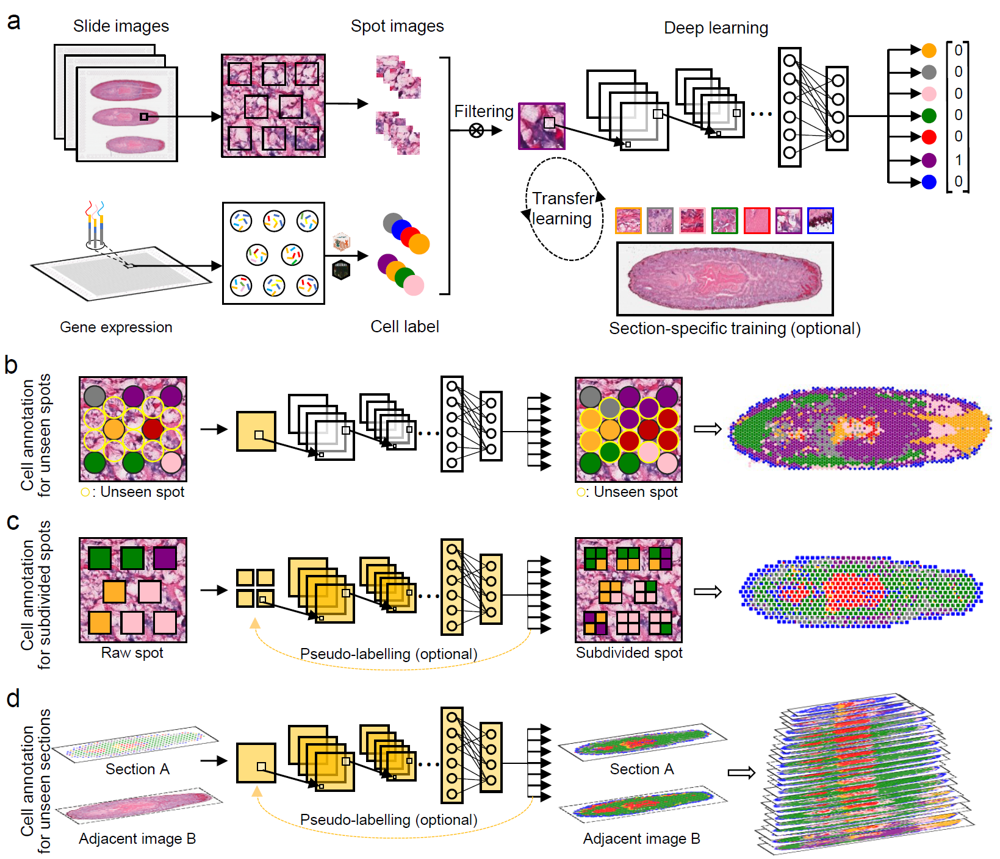

STASCAN: deciphering fine-resolution cell-distribution maps in spatial transcriptomics by deep learning¶
Contents¶
Overview of STASCAN framework¶
Introduction¶
The development of spatial transcriptomics (ST) technologies has enabled the three-dimensional presentation of cellular distribution with differential gene expression profiles in tissue, but the limited spatial resolution still poses a challenge to acquire a fine-resolved cell map. Here we propose STASCAN, which both gene expression and the morphological information are simultaneously utilized to improve the cellular resolution of captured domains and even gap regions. Besides, STASCAN is further designed to enable cell-type predictions at subdivide-spot resolution and construction of the 3D spatial cell map from histology images alone.